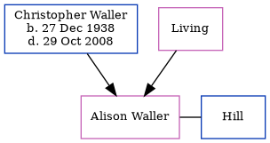

Christopher John Waller 1938 - 2008
[ Home ] | [ Calendar ] | [ Surnames Index ] | [ Census Index ] | [ Family History ]The child of John Waller and Doris Horne, Christopher Waller, the third cousin once-removed on the father's side of Nigel Horne, was born in Dover, Kent, England on Dec 27, 19381 and married Olive Edwards (with whom he had 1 child, Alison) in Bromsgrove, Worcestershire, England around May 19663.
He died on Oct 29, 2008 in Croydon, Surrey, England2.
Parents
- John James
- Doris Olive was born on Sep 11, 1913
Citations
- England & Wales births 1837-2006 - Findmypast
- United Kingdom Deaths 2007-2017 - Findmypast
- England & Wales Marriages 1837-2005 - Findmypast
Media
England & Wales marriages 1837-2008 - BMD/M/1966/2/AZ/001150/024
England & Wales births 1837-2006 - BMD/B/1939/1/AZ/001230/146
United Kingdom Deaths 2007-2017 - BMD/D/MILLEN/002810989
Family Tree
Generated by ged2site. Last updated on Jun 11, 2024